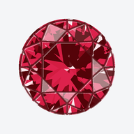

GemBook
-

Look TunerDial in the look of a gem layer by layer: body color and gradients, light and dark facets, glints, facet lines, CMYK color, actual size, and PNG or SVG export.
On a phone, open it and add it to your home screen: in Safari, Share, then Add to Home Screen; in Chrome, the menu, then Install app. It then works offline.
On a computer you can also download it as one file that opens offline.